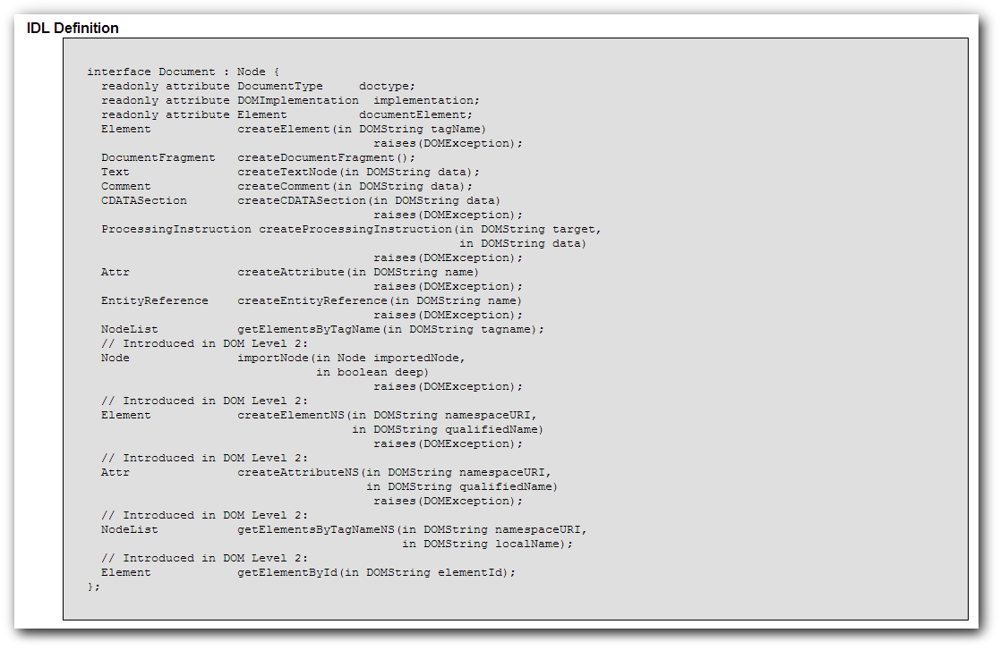

JavaScript Temelleri
Bölüm 19
W3C Belge Nesne Modeli (W3C Document Object Model) (W3C-DOM)
Bölüm 19.6.1 Sayfa 1
19.6.1 - Document (Belge) Arabirimi
Document arabirimi, belgenin kök düğümüdür ve tüm düğümlerin atasıdır. W3C-DOM yönergeleri, OMG-IDL adı verilen ve CORBA alt yapısının yazılımında kullanılan yöntemle yazılmıştır. Bu yazaılım yöntemi, her arabirimin kullanıcılarca kolayca anlaşılabilecek açıklamalarını içermektedir. Aşağıda W3C-DOM Düzey-2 CORE API de tanımlanan Document Arabiriminin IDG yazılımı görülmektedir.

Burada en önemli bilgi, bu arabirimin geriye Node (Düğüm) tipi bir nesne örneğinin bellek referansını döndüreceğidir. Node (Düğüm) tipi bir nesne, W3C-DOM Düzey-2 CORE API de tanımlanmış olan belge nesne modelinin temel nesne tipidir. Temel Node (Düğüm) tipi nesne yapısı biraz aşağıda açıklanmış olacaktır. Document düğümü gibi düğüm nesnesinin örnekleri olan düğüm nesneleri temel Node (Düğüm) tipi nesne yapısının tüm özelliklerini kalıtımla kazanacaktır. Buna ek olarak Document tipi bir düğüm nesne örneği, bu arabirimde belirtilen kendi özel Document tipinin özelliklerine de doğal olarak sahip olacaktır (Özellikler terminolojisi, sabit değer özellikleri ile, metotları birlikte kapsar).
Burada ilk olarak Document tipi düğüm nesne örneklerine özgü en çok uygulama olasılığı olan özelliklerin incelenmesi ile başlayacağız. Bu özelliklerin incelenmesi sırasında, ileride açıklananacak düğüm tiplerinin özelliklerin de yararlanmak gereği olabilecektir. Bu durumda, örneklerin iyi anlaşılması için konunun sonunda tüm örneklerin yeniden gözden geçirilmesi gerekli olabilecektir.
Document tipi düğüm nesne örneklerine özgü çok kullanılan bir metot, createElement() metodudur. Bu metodun kullanımı,
bellekReferansı = document.createElement('element adı');
Örnek olarak,
yeniParagraf = document.createElement('p');
program adımı, yeni bir Element tipi (Element sınıfı) düğüm örneği yaratır. Yaratılan düğüm örneği bir bellek bölgesinde saklanır ve bu bölgeye, yeniParagraf adındaki değişkene atanmış bir bellek referansı ile erişilir.
Yukarıdaki program adımı hiçbir görünür etki yaratmaz. Burada, yeniParagraf değişkenine atanmış olan bellek referansı yardımı ile erişilebilen, Element tipi (Element sınıfı) düğüm örneği , henüz belge ağaıcına monte edilmemştir. Yani, montaj anını beklemektedir. Buna rağmen, her ne kadar kenarda bekliyor ise de, bu bir Element tipi (Element sınıfı) düğüm nesne örneğidir. Biraz sonra göreceğimiz, Element düğümünün yapısında tanımlı olan tüm nitelikler bu yeni element düğümüne atanabilir. Burada, yeniParagraf değişkenine atanmış olan bellek referansı, bellekteki yerinde beklemekte olan bu yeni Element düğümü örneğine erişimi sağlar ve buna yeni nitelikler atanmasına olanak verir. Örnek olarak,
yeniParagraf . attributes.item('id') = 'bilgi';
program adımı, bu yeni Element dğümünün id niteliğinin değerine, 'bilgi' değerini atar, fakat bu program adımı da görünür bir sonuç oluşturmaz, Çünkü yaratılmış olan yeni Element düğümü, hala kenarda belge ağacına monte edilmeyi beklemektedir. Fakat, şimdi ilk yaratılmış olduğu durumdan farklı olarak, id niteliğinin değeri atanmış durumdadır. Kenarda beklemekte olan bu yeni Element tipi düğüm nesnesi örneğine, istenirse biraz sonra göreceğimiz bir yöntemle, bir sözel veri içeriği atanabilir, stil niteliği eklenebilir, stil sınıfı niteliği gibi başka nitelikler de eklenebilir. Sonuçta kenarda beklemekte olan bu yeni element düğümü, belge içine monte edildiğinde görüntülenebilir. Aynı şekilde, belge ağacına montajı yapıldıktan sonra da istenilien nitelikleri değiştirilebilir veya yenileri eklenebilir.
İleride uygulamalarımızda, document.createElement() metodunu çok sık kullanacağız.
Bu metod, belge ağaına monte edilmiş durumda olan bir Element düğümünün bellek referansını döndürür. Döndürülen değer, bir değişkene atanırsa, söz konusu Element düğümüne bu değişken yardımı ile erişim sağlanır ve Element düğüm tipine özgü tüm nitelileri değiştirilebilir veya yenileri eklenebilir. Bu metot beli de en çok kullanılan W3C-DOM metodu olabilir. Kullanımı,
bellekReferansı = document.getElementById('elementin id nitelik değeri');
şeklindedir. Örnek olarak
ilkParagraf = document.getElementById('sonuç1');
Bir elementin id değeri, tüm belge içinde sadece bir tek olması gerektiğinden, bu yöntem belge içinde erişilmesi istenen elemente tam ve en garantili bir nokta erişimi sağlar. Bu metodun dışında hiçbir yöntem erişilmesi istenen elemente garantili erişim sağlamaz.
Burada dikkat edilecek olan konu, W3C-DOM yöntemlerinin Element düğüm tipinin, elementler arasında bir ayrım yapmadığıdır. Yani, bir <div> elementine de, bir <img> elementine de, aynı getElementById() metodu ile erişilir. Oysa her elementin sayfadaki kullanım amacı birbirinden farklı, alabilecekleri nitelikler birbirlerinden farklı, nitelik değerlerinin sayfa görüntüsüne yapacağı etkiler farklı olabilir. Bu nedenle, erişilen element düğümünün hangi elemente ait olduğu ve bu elementin ne şekilde yönetilebileceği önceden iyice incelenmiş olmalıdır.
Bu metodun geri döndürdüğü bellek referansı, erişilmesi istenen bir element düğümünün bellek referansıdır. Bu referans, erişilmesi istenen element düğümüne doğrudan erişim sağlar ve bu düğümün yönetimine olanak verir. Örnek olarak hedef düğümün ebeveynine (parentNode), çocuklarına (childNodes) bir öceki eşdüzey kardeş düğüme (previousSibling) veya bir sonraki kardeş düğüme (nextSibling) ulaşılabilir. Her belge çözümleyicinin yaratacağı belge çözümü farklı olabileceğinden, erişilecek düğümler de farklı olabilir. Bundan başka bellek referansları, erişilen elementin niteliklerinin değiştirilmesi veya yeni nitelik değerleri atanması gibi işlemlere de olanak sağlar bu işlemleri yeri geldiğinde inceleyeceğiz.
Örnek olarak bir web sayfasını kodlarının değişecek kısmı aşağıda görülmektedir.
... <p class="cursive-red" id="nihil">Nihil Est in Intellectu Quod Non Prius Fuerit in Sensu</p> ...
Kodları aşağıda görülen bir program bu web sayfasındaki id değeri 'nihil' olan bir paragraf element düğümüne erişim sağlamakta ve bu düğümün CSS sınıf niteliğini değiştirmektedir. Bu işlem sonucunda, elementin sayfadaki görüntüsü değişmektedir. Programda kullanılmış olan bazı yöntemler, kısa sürede açıklanmış olacaktır.
/* <![CDATA[ */ function nitelikdeğeriDeğiştir() { var düğümBellekReferansı = document.getElementById('nihil'), nitelikler = düğümBellekReferansı.attributes; alert('Dikkat Renk Değişiyor !'); nitelikler.getNamedItem('class').nodeValue = 'cursive-maroon'; } sayfaYüklenmesiTamamlandıktanSonraÇalıştır(nitelikDeğeriDeğiştir); /* ]]> */
Belge tipi düğümlerin getElementById() metodu, W3C-DOM yöntemlerinde çok sık kullanılan, yerleşik bir sayfa elementine en garanti erişimi sağlayan, çok sık kullanılan bir metottur.
Belge tipi düğümlerin bir diğer ilginç metodu, document.getElementsByTagName() metodudur. Bu metodun kullanımı,
bellekReferansı = document.getElementsByTagName('erişilecekElementDüğümleriAdı');
şeklindedir. Erişilecek elementlerin adı 'p' gibi, 'a' gibi element türleridir. Bu metot geriye bir NodeList ( Düğüm listesi) tipinde bir veri döndürür. Yani, bir bellek bölgesine yerleşmiş düğüm listesi tipinde bir nesne örneğine erişim sağlayan bir bellek işaretçisi (bellek referansı) döndürür. Bu bellek işaretçisi (pointer) 'in bir değişkene atanması ile, bu değişken yardımı ile işaret ettiği düğüm listesinin elemenlarına erişim sağlanır. Düğüm listeleri teknik olarak tam bir dizi değil dizi benzeri bir nesne yapısındadır. Düğüm listelerinin elemanlarına erişim dizi elemanlarına erişime benzemektedir. Düğüm listesi içinden belirli bir elemana erişilmesinin yöntemleri, düğüm listeleri incelenirken görülecektir.
Belge tipi düğümlerin, getElementsByTagName() metodunun kullanımında dikkat edilecek nokta, bu metodun dizi benzeri bir düğüm listesi geri döndürdüğüdür. Bu düğüm listesi, sayfaya yerleşik aynı tipten tüm elemanları içerir. Eğer sayfa yapısı sonradan değişirse, bu dizi listesi içinden erişilmesi hedeflenen elemanın yerleşim sırası da değişmiş olur. Bu açıdan, belirli bir elemana erişim için, document.getElementById() metodu daha garantilidir. Uygulanacak document.getElementsByTagName() metodu, spesifik bir elemana erişimden çok, sayfa yapısının değişmesinden etkilenmeyecek yöntemler için, örnek olarak sayfada yerleşmiş olan belirli bir eleman türlerinin tümünün niteliğinin değiştirileceği yöntemler için daha uygun olabilir.
Aşağıda kodları görülen program, bir web sayfasında yerleşik tüm liste elemanlarının yazı tipini normalden italiğe dönüştürmektedir.
/* <![CDATA[ */ function yazıTipiDeğiştir() { var listeElemanları = document.getElementsByTagName('li'); alert('Dikkat Stil Değişiyor !'); for(var i = 0; i <listeElemanları.length ; i ++) { listeElemanları.item(i).setAttribute ('style', 'font-style : italic;'); } } sayfaYüklenmesiTamamlandıktanSonraÇalıştır(yazıTipiDeğiştir); /* ]]> */
Belge düğümlerinin document.createDocumentFragment() metodu, birden çok element içeren bir belge kısmını, belgeye eklemek için kullanılır. Bu yönteme sık olarak başvurulmaz.
Belge düğümlerinin document.createTextNode() metodu, belgeye yeni bir metin düğümü eklemek için kullanılır. Bu metot, yeni bir metin düğümü yaratır fakat, bu metin düğümünü belge ağacına yerleştirmez. Yaratılan element belge ağacına yerleştirilinceye kadar çözümlenmez. Bu metodun uygulanması,
bellekReferansı = document.createTextNode('içerik');
şeklindedir. Yaratılacak içerik istenilen bir metin parçacığı olabilir Bu metodun geri döndürdüğü bellek referansından, ileride bu bu metin düğümüne erişilip belge ağacına yerleştirmek için kullanılır.
Belge düğümlerinin document.createComment() metodu, belgeye yeni bir yorum düğümü eklemek için kullanılır. Bu metot, yeni bir yorum düğümü yaratır fakat, bu yorum düğümünü belge ağacına yerleştirmez. Yaratılan element belge ağacına yerleştirilinceye kadar çözümlenmez. Bu metodun uygulanması,
bellekReferansı = document.createComment('içerik');
şeklindedir. Yaratılacak içerik istenilen bir metin parçacığı olabilir Bu metodun geri döndürdüğü bellek referansından, ileride bu bu yorum düğümüne erişilip belge ağacına yerleştirmek için kullanılır.
Bu metot geriye yeni bir nitelik düğümü referansı döndürür. Kullanımı,
document.createAttribute('yeniNitelikİsmi');
şeklindedir. Yeni oluşturulan nitelik için istenirse
yeniOluşturulan NitelikBellekReferansı.nodeValue = 'yeniVarsayılanDeğer';
şeklinde bir varsayılan değer de atanabilir.
document.createAttribute() Metodu ile oluşturulan yeni nitelik otomatik olarak bir elementele ilişkilendirilmez. Bu niteliğin bir elementle ilişkilendirilmesi için, setNamedItem() veya setAttribute() metotlarının kullanılması gerekir.
document.createAttribute() Metodu sadece XML çalışmalarında önem taşır. (X)HTML çalışmalarında ise, tüm nitelikler DTD ile belirlidir ve yeni bir niteliğin işlevi yoktur. (X)HTML çalışmalarında sadece, var olan bir nitelik yeni bir başlangıç değeri ile oluşturulursa, bu nitelik ile ilişkilendirilen bir element var olan bu niteliğin yeni başlangıç değerini kazanır. Bu konuda, 19.6.4.2-uyg-1.htm deki uygulama açıklayıcı olacaktır.